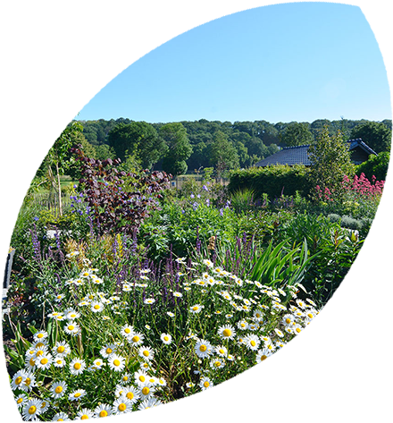
Ontwerp en groenaanleg
Toe aan iets nieuws, maar geen idee waar je begint? Wij adviseren, ontwerpen, renoveren en voeren uit, en zijn bij het hele proces betrokken. Met beplanting gericht op biodiversiteit en puur natuur.
Hoveniers- en groenvoorzienersbedrijf uit Apeldoorn én social enterprise. Wij ontwerpen, leggen aan en onderhouden groen voor scholen, zorginstellingen, gemeenten en bedrijven. Met vaste vakkrachten en mensen die bij ons het vak leren.
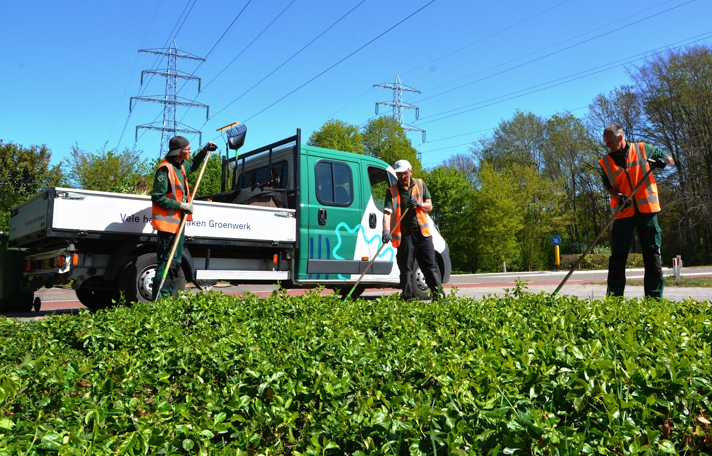
We kijken altijd of we samen met de opdrachtgever het groen kunnen verzorgen. Want vele handen maken groenwerk.
Met begeleiding, coaching en opleiding ontdekken en benutten we elkaars talenten, zodat iedereen een bijdrage levert.
Duurzaam is geen trend, het is het fundament. We helpen scholen, zorginstellingen en organisaties verduurzamen.
Van een nieuwe schooltuin tot het beheer van een heel natuurgebied. Alle expertise zit in huis, dus je hebt één aanspreekpunt voor het hele groen.

Toe aan iets nieuws, maar geen idee waar je begint? Wij adviseren, ontwerpen, renoveren en voeren uit, en zijn bij het hele proces betrokken. Met beplanting gericht op biodiversiteit en puur natuur.
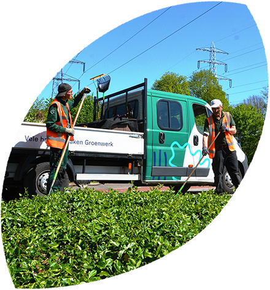
Wat groen is, moet groen blijven. Plantsoenen schoffelen, hagen knippen, bestrating onderhouden: onze hoveniers zorgen samen voor een schone, natuurlijke leefomgeving.
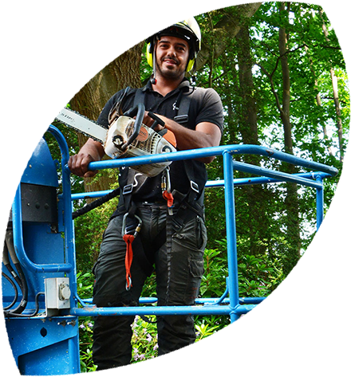
Voor ieders veiligheid moeten bomen voldoen aan de VTA-norm. Wij doen structureel visuele boomcontroles, signaleren verborgen gebreken op tijd en houden de gezondheid van je bomen in de gaten.
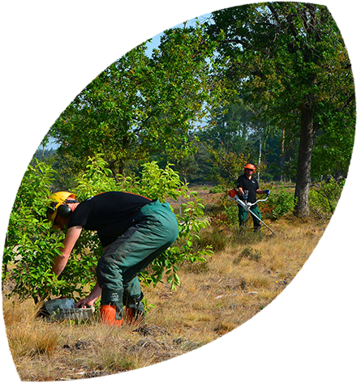
Grootschalig groen vraagt om gespecialiseerde methodes. We bevrijden grote oppervlaktes van bijvoorbeeld de bospest of Japanse duizendknoop, en zorgen voor gezonde bossen, parken en natuurgebieden.
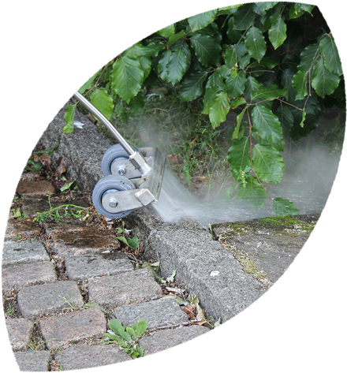
Zonder chemische middelen. We werken alleen met 100% schoon, heet water. Dat vernietigt de plant tot in de kern en is beter voor het milieu.
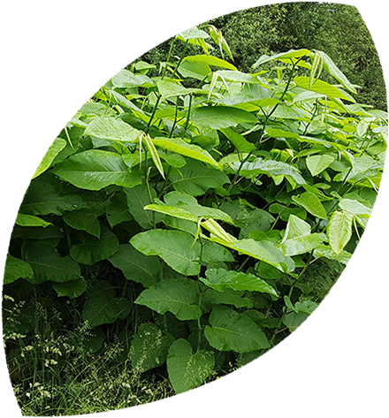
Invasieve exoten tasten funderingen en terreinen aan, soms tot ze onbruikbaar zijn. Zo ver hoeft het niet te komen. Weet op tijd waar je mee te maken hebt; wij pakken ze milieuvriendelijk aan.
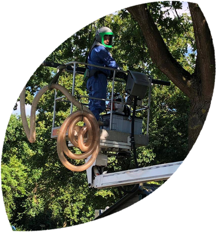
De brandhaartjes zijn slecht voor de boom én voor mensen, en als boomeigenaar ben je aansprakelijk voor de gevolgen. Wij bestrijden de rups snel en veilig, met veel kennis en vakmanschap.
Bereikbaarheid staat bij ons hoog, zeker voor organisaties als ziekenhuizen. We strooien zout en schuiven sneeuw netjes aan de kant. Bij onstuimig weer is onze calamiteitentelefoon 24/7 bereikbaar.
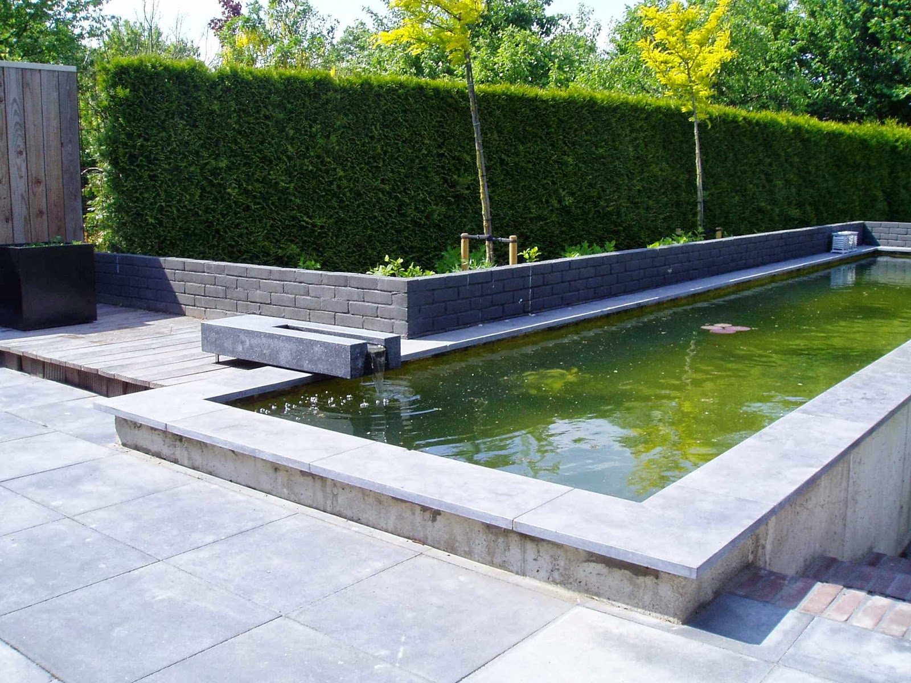
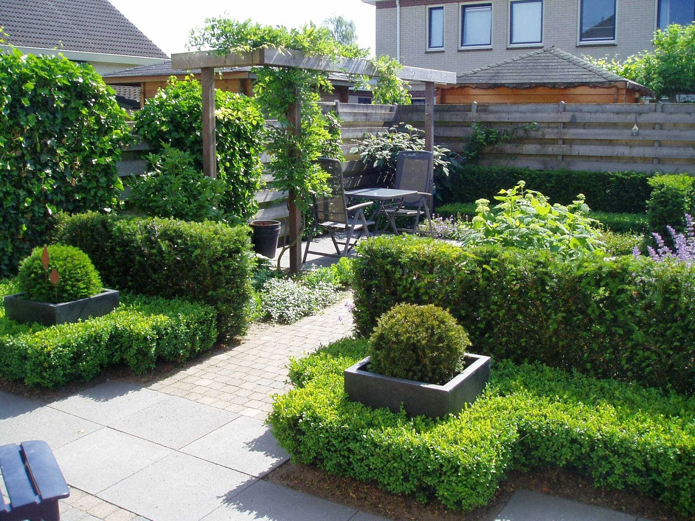
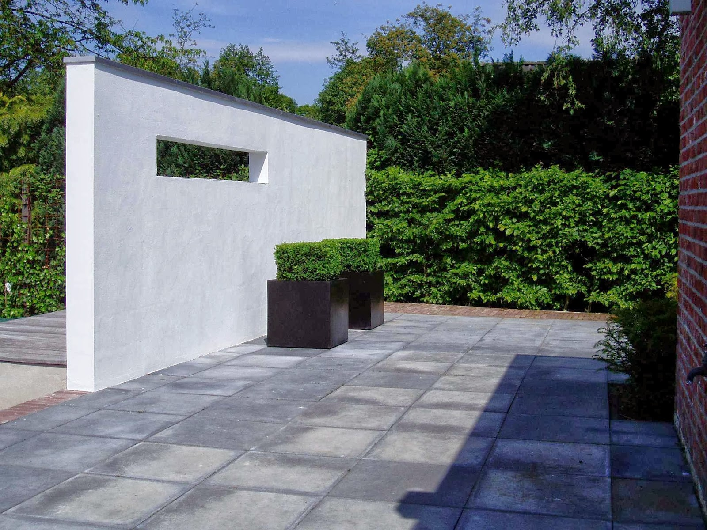
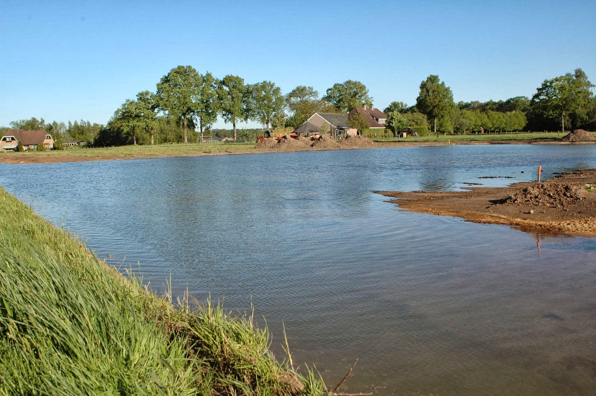
Zakendoen met een social enterprise is voor jou als opdrachtgever een mooi visitekaartje en een positieve bijdrage aan het maatschappelijk belang.
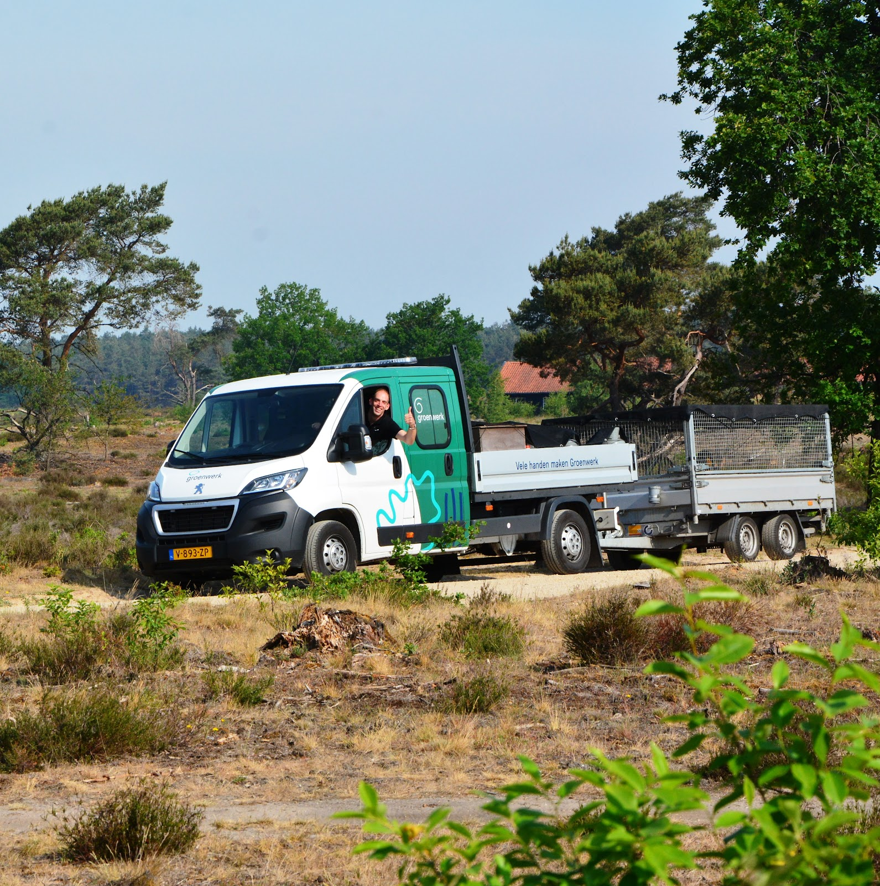
Groenwerk is een gecertificeerd, professioneel hoveniers- en groenvoorzienersbedrijf. En meer dan dat: onze hoveniers bestaan deels uit mensen met een afstand tot de arbeidsmarkt. Met begeleiding, opleiding en training krijgen zij een volwaardige functie in de groensector.
Hans Terhorst zette Groenwerk in 2010 op poten, met ervaring in het onderwijs, het ondernemerschap, de overheid en het sociaal-maatschappelijke veld. In 2023 namen zijn dochter Anne-Marie en schoonzoon Kevin het bedrijf over, met dezelfde filosofie en nieuwe energie.
"Vanuit de overtuiging dat een organisatie meerwaarde dient te genereren voor haar directe omgeving ging ik sociaal ondernemen."
"Groen heeft een heilzame werking op mensen."
"Sinds ik bij Groenwerk werk, kijk ik anders tegen de natuur aan; ik verdiep me er nu meer in."
"Ik heb geleerd iedereen op z'n eigen niveau te waarderen; iedereen is gelijk en we doen het met elkaar."
"Wat ik bij Groenwerk heb geleerd, is dat ik meer op mezelf kan en mag vertrouwen."
"Ik heb voor Groenwerk gekozen vanwege de goede begeleiding en de mogelijkheid om te groeien."
3e prijs
Duurzaamste Hovenier van Nederland in de openbare ruimte
Gevarieerd werk, lokaal en in de regio. Goede arbeidsvoorwaarden, ruimte voor scholing en opleiding, en een hardwerkend en plezierig team.
Vertel ons wat er moet gebeuren. Bellen is het snelst, mailen vinden we ook leuk.
Wilmersdorf 44-J
7327 AC Apeldoorn
4,4 op Google, uit 19 reviews